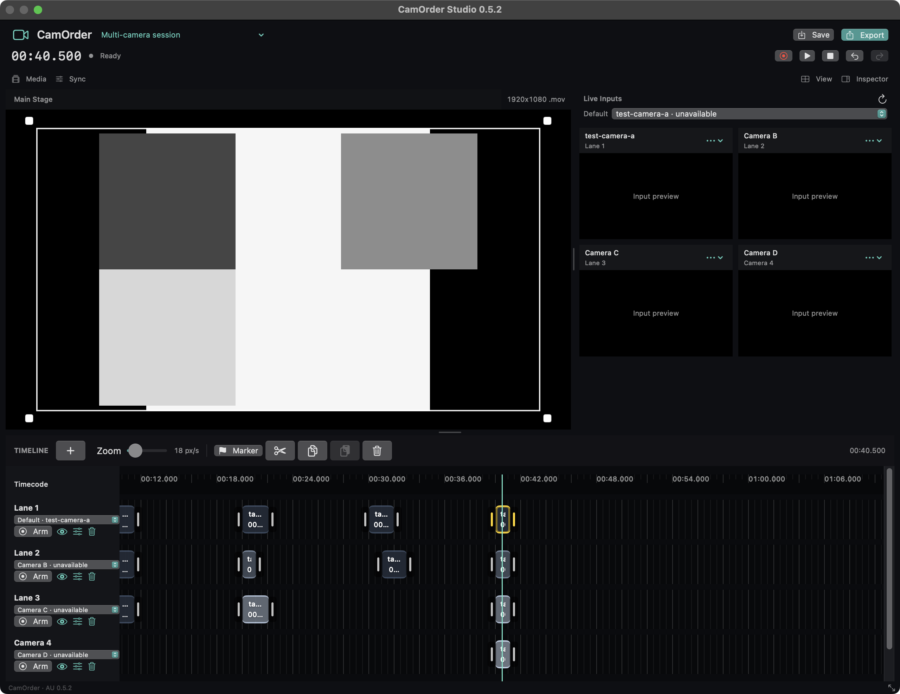

Start with one camera.
Every lane uses your shared Default input. Give lanes their own cameras when you need more angles, with one preview per source.
One Audio FX plug-in on Stereo Out. Record cameras or your screen, build your edit in video lanes, and export a movie while keeping Logic at the center.
Intel Mac · macOS 13+ · Development build, locally signed and not notarized. Apple silicon source builds are not validated in this release.

Every lane uses your shared Default input. Give lanes their own cameras when you need more angles, with one preview per source.
Arm your video lanes and press Play or Record in Logic. Capture stays active while you work in the timeline or close the editor.
Resize the window and panels, layer smaller videos over other lanes, animate their framing, and adjust each lane's sync without changing the movie's import position.
No MIDI or timecode-audio routing is needed for normal Stereo Out operation. Audio passes through unchanged; recorded takes are video-only. Import a bounced master if you want audio in the exported movie.
Four simultaneous synthetic inputs were tested. Actual camera count, frame rate and audio/video sync depend on your setup. Read the verification record.